Week 2: Demo planning/development
Description
This week, I’ve been primarily preparing for the tech demo in Week 3. Following the decision made in Week 1, I’ve continued to focus on 3D modeling, using Blender as my main tool. My work this week has been divided into two parts: first, continuing my modeling practice, and second, preparing the PowerPoint presentation for next week’s presentation. So far, I’ve completed the 3D modeling exercise and am currently working on the presentation slides. This PowerPoint presentation covers what 3D modeling is, what Blender is, some examples of 3D modeling, my own practice process, the inspiration behind the “Glass Bottle Microcosm,” and some Blender tips suitable for beginners.
The materials for Week 2 also provided us with a clear framework for planning a tech demo. The instructor asked us to first define the demo’s theme, then select an appropriate presentation format, organize the content structure clearly, and take into account that the classroom is a shared space where multiple people present simultaneously and it may be noisy. The course materials recommended a presentation structure consisting of an introduction, core demonstration, practical applications, and a closing with a Q&A session. The class also emphasized that slides must be clear and easy to read, while also considering time management, audience engagement, subtitles, and backup plans.
After reviewing the examples on Canvas, I realized that my current presentation already covers many of the requirements. My content includes a background introduction, examples, my own practice process, the final model, the basic Blender interface, basic operations, tips and tricks, and a QR code for a tutorial video. This demonstrates that my demo isn’t just a simple introduction to the software; it also shows how it’s actually used and why it’s helpful for design.
Feelings
As the week began, I felt more focused than I had during the first week, because I had already settled on a direction. Unlike the first week, when I was still wavering between coding, pixel art, and 3D modeling, this week I was finally able to devote my energy to actual production and preparation. This made my progress feel much clearer.
At the same time, though, I’m feeling a bit of pressure. Even though I’ve finished the PowerPoint presentation, I know that completing the slides doesn’t mean I’m truly ready to give the talk. I still need to consider whether I can explain Blender clearly enough, especially given that there may be uncertainties in the classroom setting, and I’m not sure if my content is too broad or if it’s easy enough for beginners to understand.
However, when I look back on the development of my model, I feel a sense of satisfaction. From practicing with bottles and elements, to working on lighting and rendering, all the way to the final model, this entire process gives me tangible proof that I’ve actually learned and created something this week — rather than just staying at the idea stage. This makes me feel a sense of accomplishment, because the course has consistently emphasized that both the blog and the assessment place great importance on documenting the process and providing evidence of my work.
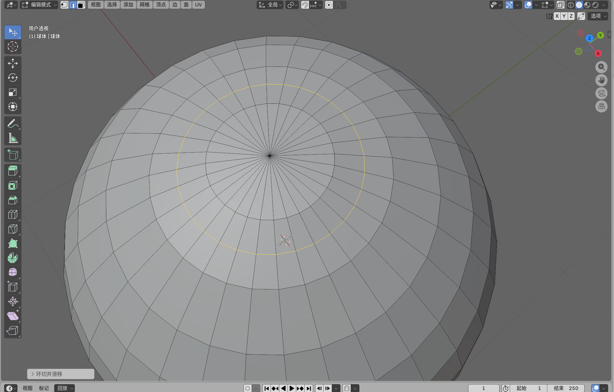
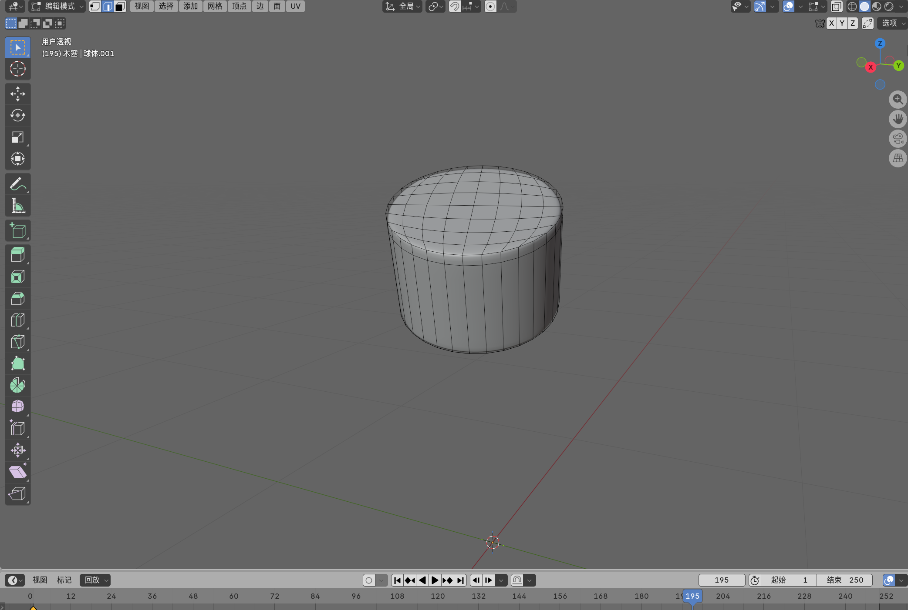
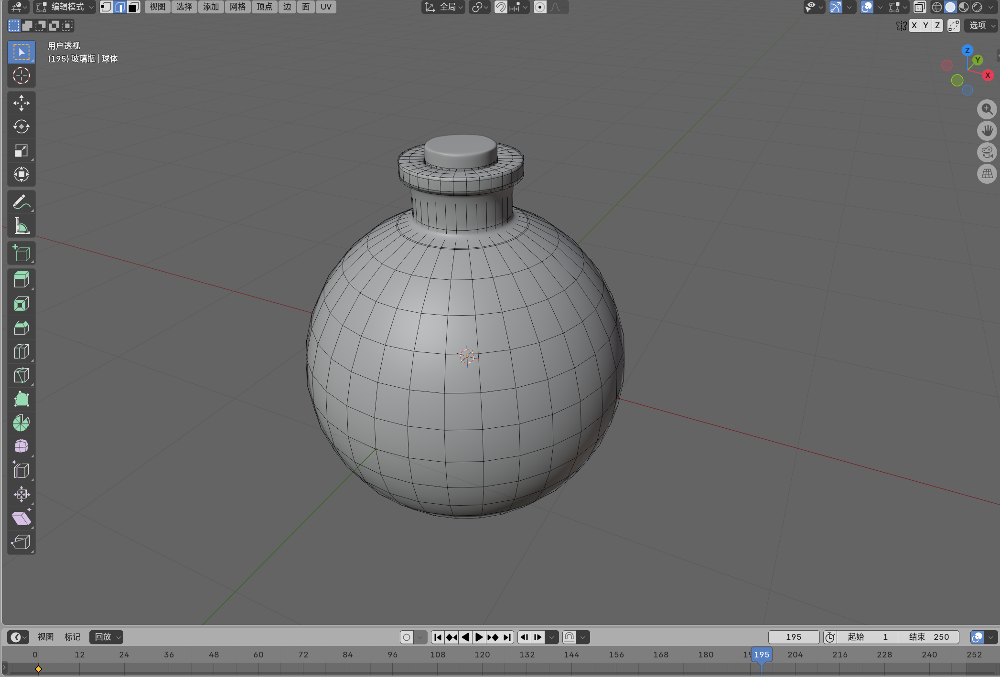
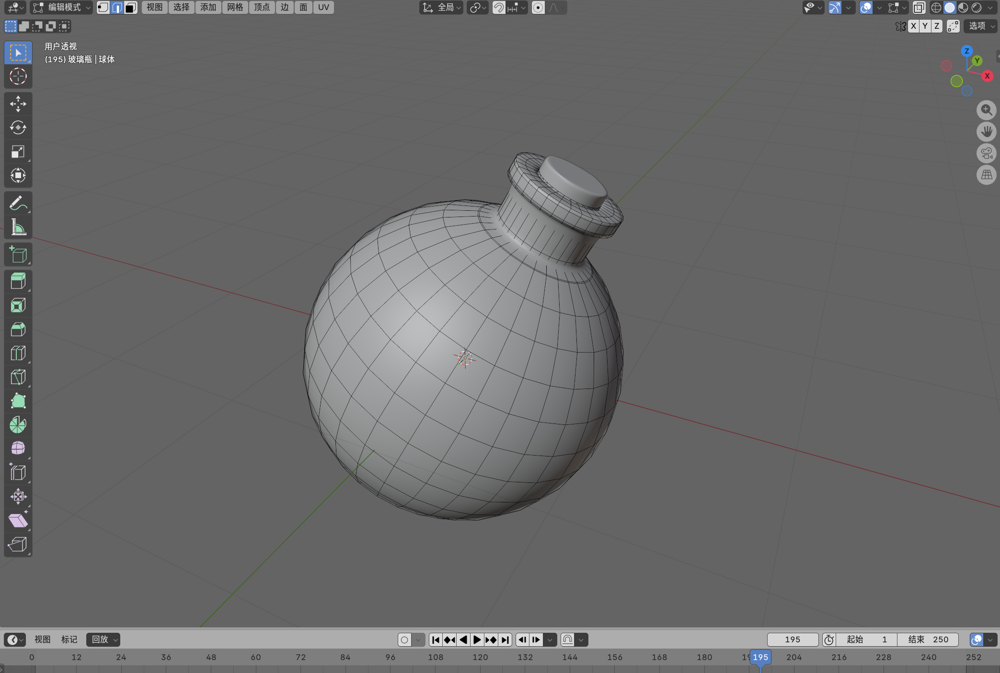
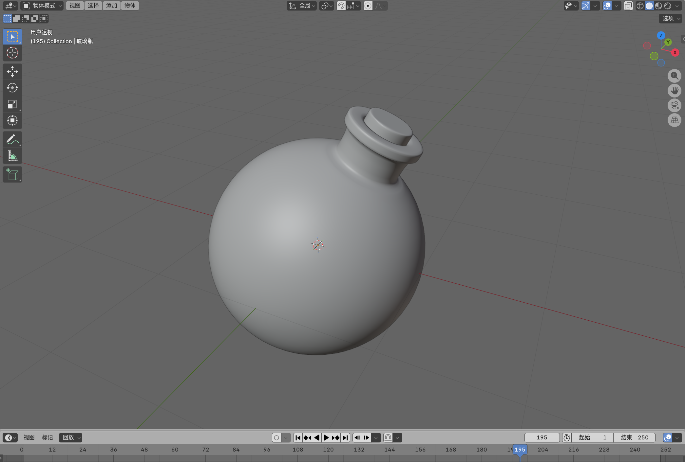
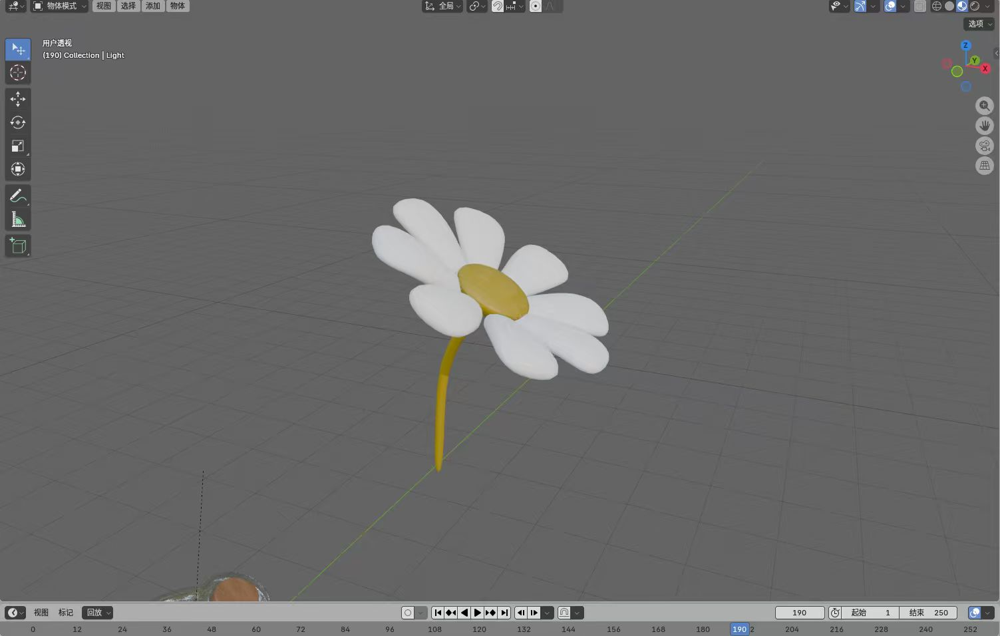
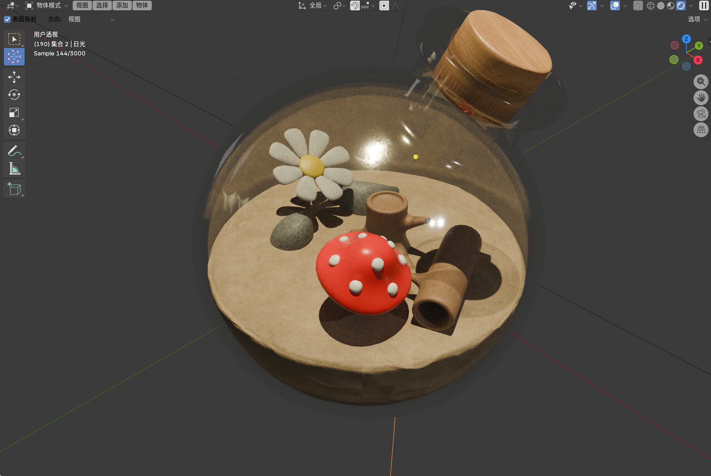
.png)
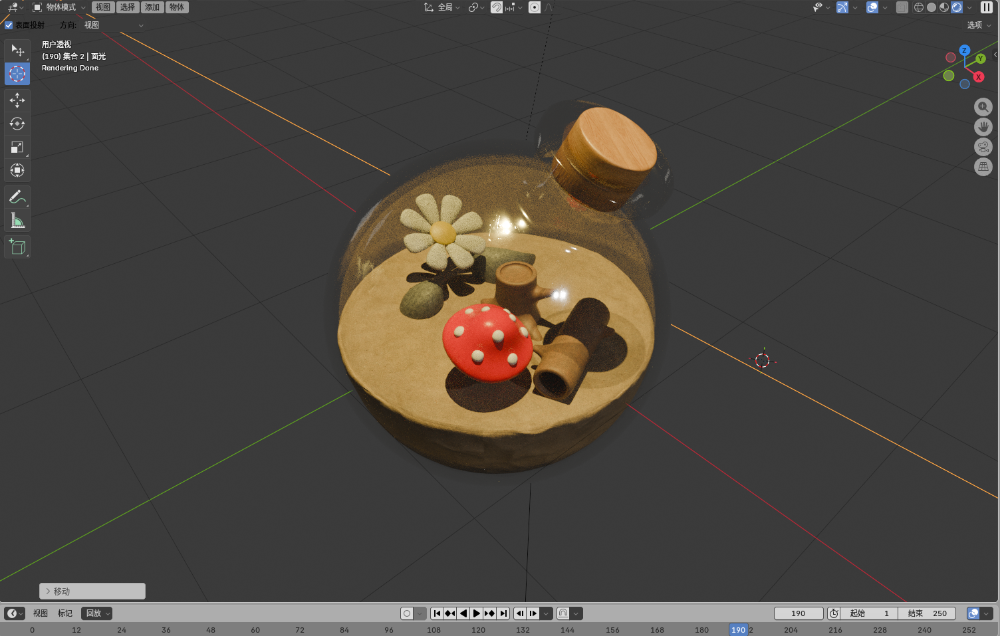
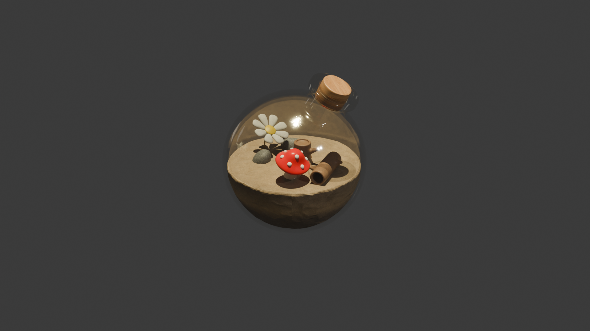
Evaluation
One positive development this week is that my demo plan has become much more concrete. Compared to the first week, I’ve moved from “figuring out what interests me” to “actually creating the presentation content and deciding what I want to teach others.” I think this is a significant step forward. My topic is clear, the visual style of my slides is consistent, and I’ve included both a basic introduction and examples from my own practice — which aligns well with the course requirements of being clear, engaging, and useful.
Another advantage was that I didn’t rely solely on external examples; instead, I incorporated my own projects into the presentation. In my slides, I demonstrated how I drew inspiration from a crystal ball and eventually developed it into a miniature world inside a glass bottle. I also documented the bottle modeling, element design, lighting, rendering, and the final model. This made the presentation more personal and persuasive, because I wasn’t just explaining Blender in theory — I was actually showing how I use it.
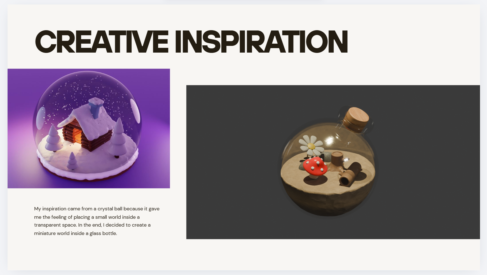
However, there were some shortcomings this week. One issue is that my current presentation already includes quite a bit of introductory material, but I’m not entirely sure if my “core demonstration” section is strong enough. As mentioned in the Week 2 course materials, the most crucial part of the demo should demonstrate how the tool works, explain the key steps, and ensure the audience walks away with a useful takeaway. I feel that my slides currently explain Blender and showcase case studies, but perhaps I need to ensure that the actual instructional portion is sufficiently focused, rather than remaining merely at the explanatory level.
Analysis
I think the reason this week went more smoothly than the first is that I now have a clear direction, so I was able to move from indecision to actually getting things done. I also noticed a pattern in my own work: when I can connect what I’m learning to something concrete and visual, I feel more confident. Incorporating the process of creating a miniature world inside a glass bottle into my presentation gave me a concrete example to discuss and made the entire demo more relatable.
At the same time, however, my biggest weakness remains scope management. I often find myself wondering whether I should include everything I know, thinking that doing so will make the presentation feel “more complete.” But for a presentation — especially a relatively short tech demo — completeness doesn’t necessarily equate to clarity. The materials from Week 2 actually made this point very clear: a good tech demo requires a clear focus, a clean visual presentation, a clear takeaway, and realistic time management.
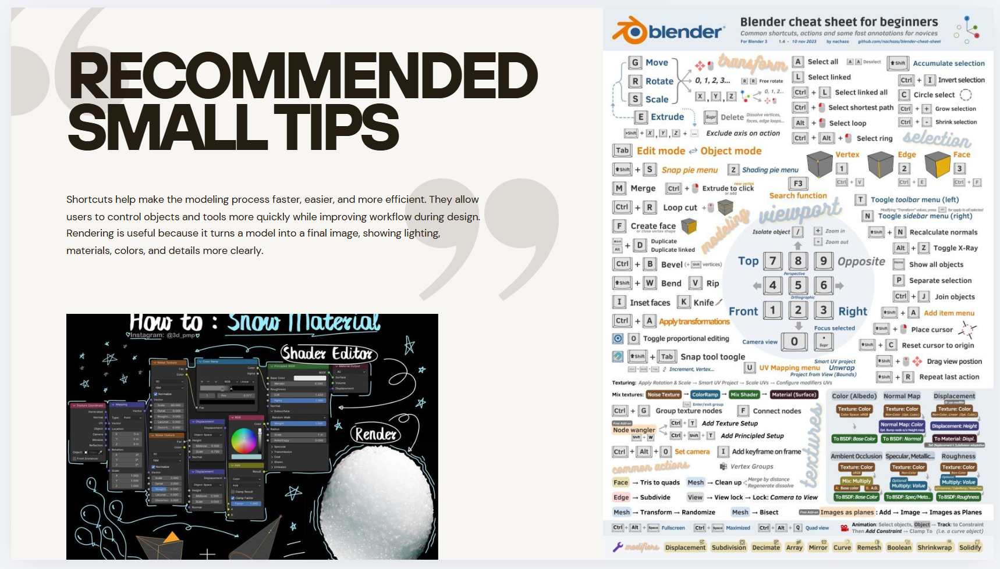
This is also related to the Gibbs model itself. The focus of reflection is not merely on listing what one has done, but on explaining which factors facilitated progress and which factors hindered it. The University of Edinburgh’s Reflectors’ Toolkit notes that the significance of the Gibbs cycle lies in its ability to truly transform an experience into learning through evaluation, analysis, and an action plan. For me, the deeper question is whether I can organize my skills into a format that is easy for others to understand and genuinely helpful.
Conclusion
This week has taught me that preparing a demo is about more than just putting together a set of slides. It’s also a process of selection: I have to decide what knowledge is most worth sharing, which examples best illustrate that knowledge, and how to organize the content so that others can follow along more easily.
For me, the most important lesson I learned this week is that creating a good design presentation requires both technical skills and communication skills. Knowing how to use Blender is only part of it; being able to explain it clearly, simply, and meaningfully is another skill I need to continue developing.
On a more personal level, I want to develop a better habit of narrowing down my focus earlier on. Rather than cramming in a lot of content to make my work seem “complete,” I’d rather practice identifying the most valuable core message as early as possible. As the Reflectors’ Toolkit also notes, the focus of an action plan is on improving personal habits and future approaches, not just listing tasks. For me, this means becoming better at making trade-offs, more audience-conscious, and more confident in presenting only the most essential content.